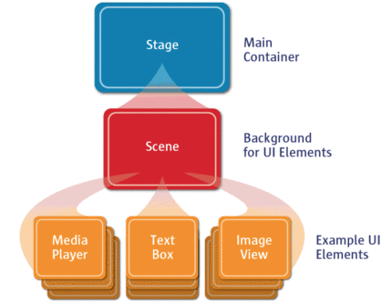
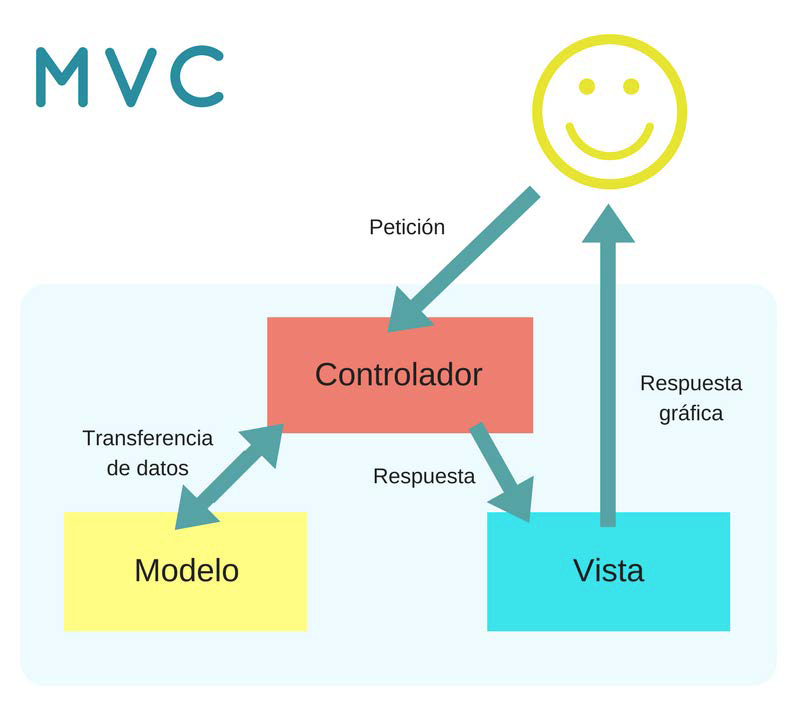

Historia de JavaFX
JavaFX fue desarrollado por Chris Oliver. Inicialmente, el proyecto se denominó Form Follows Functions (F3). Está destinado a proporcionar las funcionalidades más ricas para el desarrollo de aplicaciones GUI. Posteriormente, Sun Micro-systems adquirió el proyecto F3 como JavaFX en junio de 2005.
Sun Micro-systems lo anuncia oficialmente en 2007 en la Conferencia W3. En octubre de 2008, se lanzó JavaFX 1.0. En 2009, la corporación ORACLE adquiere Sun Micro-Systems y lanzó JavaFX 1.2. la última versión de JavaFX es JavaFX 19.
JavaFX es una tecnología que nos permite crear aplicaciones de escritorio RIA (Ritch Internet Applications), esto es, aplicaciones web que tienen las características y capacidades de aplicaciones de escritorio, incluyendo aplicaciones multimedia interactivas que pueden ejecutarse en una amplia variedad de dispositivos. JavaFX está destinado a reemplazar a Swing como la biblioteca de GUI estándar para Java SE.
La biblioteca de JavaFX está escrita como una API de Java, las aplicaciones JavaFX pueden hacer referencia a APIs de código de cualquier biblioteca Java. Por ejemplo, las aplicaciones JavaFX pueden utilizar las bibliotecas de API de Java para acceder a las capacidades del sistema nativas y conectarse a aplicaciones de middleware basadas en servidor.
La apariencia de las aplicaciones JavaFX se pueden personalizar. Las Hojas de Estilo en Cascada (CSS) separan la apariencia y estilo de la lógica de la aplicación para que los desarrolladores puedan concentrarse en el código. Los diseñadores gráficos pueden personalizar fácilmente el aspecto y el estilo de la aplicación a través de CSS. Si se tiene un diseño de fondo de la web, o si se desea separar la interfaz de usuario (UI) y la lógica de servidor, entonces, se pueden desarrollar los aspectos de la presentación de la interfaz de usuario en el lenguaje de scripting FXML y utilizar el código de Java para la aplicación lógica. Si se prefiere diseñar interfaces de usuario sin necesidad de escribir código, entonces, utilizaremos JavaFX Scene Builder. Al diseñar la interfaz de usuario con javaFX Scene Builder el crea código de marcado FXML que puede ser portado a un entorno de desarrollo integrado (IDE) de forma que los desarrolladores pueden añadir la lógica de negocio.
Lo primero será explicar los tres conceptos que tiene JavaFX:
- El Escenario, que es representado por la clase Stage. El escenario es el representa al contenedor general de JavaFX.
- La escena, es representada por la clase Scene y es la que tiene el contenido de lo que queremos representar. La escena, por lógica se monta sobre el escenario.
- Los nodos de la escena, son los elementos que componen la escena. La clase superior que representa estos nodos es un Panel.

Modelo vista controlador (MVC)
Modelo Vista Controlador (MVC) es un estilo de arquitectura de software que separa los datos de una aplicación, la interfaz de usuario, y la lógica de control en tres componentes distintos.
Se trata de un modelo muy maduro y que ha demostrado su validez a lo largo de los años en todo tipo de aplicaciones, y sobre multitud de lenguajes y plataformas de desarrollo.
- El Modelo que contiene una representación de los datos que maneja el sistema, su lógica de negocio, y sus mecanismos de persistencia.
- La Vista, o interfaz de usuario, que compone la información que se envía al cliente y los mecanismos interacción con éste.
- El Controlador, que actúa como intermediario entre el Modelo y la Vista, gestionando el flujo de información entre ellos y las transformaciones para adaptar los datos a las necesidades de cada uno.
